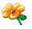
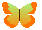
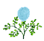

-  Works
-  Commissioned Illustrations
-
 CV
CV
-  About
- Contact
Gladys Camilo
b.1990 Compton, California
lives and works in Helsinki
It’s important to recognize that encounters with institutional biases, structural racism, and socio-economic
limitations are present within educational institutions, because I’ve lived it. I was unable to complete my BFA
degree due to the rising cost of tuition. After moving to Finland and being accepted to Art School MAA, I
encountered an unsafe and racist classroom environment. Despite the best efforts of the school’s director who
introduced new guidelines in response to my experiences, I needed to prioritise my mental health and step
away from the program. I therefore have partial university qualifications, but have actively maintained an
autodidact’s approach to learning.
2019-2020, Taidekoulu Maa
2014-2016, La Sierra University, BFA
2022, Group Exhibition, Gursha, Luna Society ry, Helsinki, Finland, Curated by Kihwa-Endale.
2021, Group Exhibition, 1 to 100 Artshop, Katugalleria Mutteri, Helsinki, Finland, Curated by Hikari Nishida and Emil Lyytikkä.
2021, Group Exhibition, artwork commission "The Spider's Nest".What's the Use of Intersectionality, STOA, Helsinki, Finland, Curated by Feminist Culture House
2020, Group Exhibition, O Worm Supreme: A year-long Exhibition in a Forest, TUO TUO Arts, Joutsa, Finland, Curated by Liina Aalto-Setälä
2020, Salon Ehibition, Summery Sales Exhibition, Kosminen, Helsinki, Finland
2019, Group Exhibition, Freedom to Roam, Kruunuvuori Forest, Helsinki, Finland, Curated by Liina Aalto-Setälä
2016, Group Exhibition, Anual Student Show, Brandstater Gallery, Riverside, CA
2021, Cover Illustration, Astra Magazine #4, Helsinki, Finland.
2021, Illustrations, Ylioppilaslehti #5, Helsinki, Finland.
2021, Book Illustrations, Mahbouba, Saara, Performing a Life-time Edited by Paola Jalili, Quince Ediciones, Helsinki, 2021.
2020, Illustrations, Zelda Zine, Helsinki, Finland.
2019, Illustrations, Libero, Helsinki, Finland
2019, Illustrations, Groteski, Helsinki, Finland
2018, Zine illustrations, Glyph Drawing Club User Guide V1.0.0 by Heikki Lotvonen
2022, Working Group Member, Studio Visit Ethics Project, Feminist Culture House. Helsinki, Finland. Funded by City of Helsinki.
2021, Nestee Curator, Plantasy, Curated by Gladys Camilo and Jonni Korhonen in collaboration with Feminist Culture House, Helsinki, Finland
2021, Group Performance, Exit Through the Loophole, Vappan Taiteen Tila, Helsinki Finland.
2021, Peer Group Host, Peer Group for Underrepresented Artists, Feminist Culture House,
Helsinki, Finland
2019, Performance at Over Realism: Passing Information Radically, Bio Rex, Helsinki, Finland
2019, Collective Writings, Propagate-Your Thoughts by Senia Barron
2021, Working Grant 4 months, Kone Säätiö through Feminist Culture House
2020, Artist Grant, Kotiresidenssi from Kone Säätiö
Board Member of MYOS ry, Helsinki, Finland
Catalysti
Globe Art Point